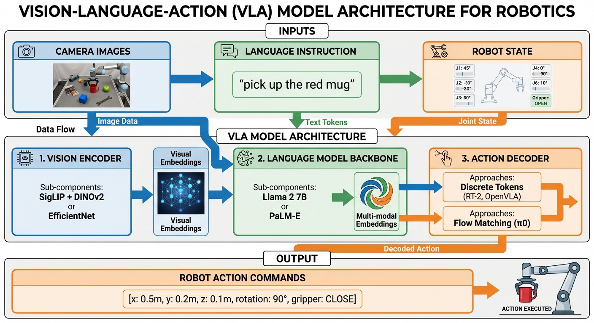
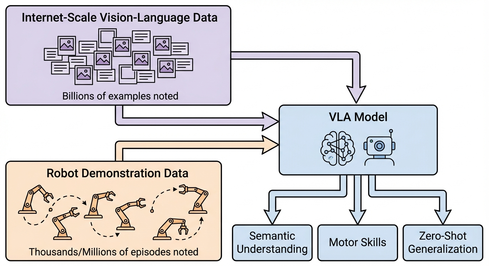

Robot Learning Part 3: Vision-Language-Action (VLA) Models
- VLA models unify vision, language, and action in end-to-end neural networks for robotic control
- Co-training on internet-scale vision-language data + robot demonstrations enables zero-shot generalization
- Key innovation: Treating robot actions as language tokens (RT-2) or continuous trajectories (π0)
- Performance: OpenVLA (7B) outperforms RT-2-X (55B) by 16.5% with 7× fewer parameters
- Trade-offs: VLAs excel at semantic understanding but face deployment challenges (latency, robustness)
What Are VLA Models?
Imagine you’re teaching someone to cook. You don’t just show them what ingredients look like, or explain recipes in words, or demonstrate knife techniques in isolation. You integrate all three: “See these tomatoes? Dice them like this while following the recipe.” That’s exactly how Vision-Language-Action (VLA) models work.
VLA models are multimodal foundation models that process three inputs together: 1. Vision: Camera images of the robot’s environment 2. Language: Natural language instructions (“pick up the red mug”) 3. Proprioception: Robot’s current state (joint positions, velocities)
And produce one output: - Actions: Executable motor commands to control the robot

As shown in Figure 1, VLAs differ fundamentally from the specialized policies we’ve seen in Part 1.5 (ACT) and will see in Part 2 (Diffusion Policy). Instead of learning task-specific behaviors, VLAs aim for generalist intelligence — a single model that can handle diverse tasks across different environments and robot embodiments.
Why VLA Models Matter Now
Recall from Part 1 that robot learning faces a fundamental challenge: how do we create policies that generalize beyond their training data? Traditional approaches required collecting demonstrations for every task, on every robot, in every environment.
VLA models change this equation through transfer learning: - Vision encoders pre-trained on billions of images understand object semantics without robot-specific training - Language models pre-trained on internet text understand task instructions and spatial reasoning - Robot demonstrations teach motor skills, but semantic knowledge comes “for free”
The result: RT-2 achieves 3× better generalization than RT-1, with emergent capabilities like reasoning (“pick up an object that could be used as a hammer” → selects a rock).\(^{[1]}\)
Traditional robot systems are like separate departments in a company: the vision team processes images, the language team interprets commands, the planning team decides actions. Each hands off to the next, with information lost at every boundary.
VLA models are like a single expert who sees, understands, and acts simultaneously. When you ask a chef to “dice those tomatoes,” they don’t mentally translate to a planning module that sends commands to a motor control system. They just… do it. VLAs aim for this same integrated intelligence.\(^{[2]}\)
The Evolution of Robot Policies
To understand why VLAs represent a paradigm shift, let’s trace the evolution:
Single-Task Policies (ACT, Diffusion Policy)
As we saw in Part 1.5, ACT achieves impressive 80-90% success on specific manipulation tasks with just 50 demonstrations. But each task requires: - Task-specific data collection - Separate model training - No transfer between tasks
Limitation: You need N models for N tasks.
Multi-Task Policies (RT-1)
RT-1 (2022) demonstrated that a single transformer could handle 700+ tasks with 130k demonstrations across 13 robots.\(^{[3]}\) This proved task-conditional control was feasible.
Innovation: Natural language task specification instead of task IDs.
Limitation: Still requires robot demonstrations for every task, even simple variations.
Foundation Model Policies (RT-2, OpenVLA, π0)
VLA models leverage vision-language pre-training to achieve: - Zero-shot execution of novel tasks - Emergent reasoning capabilities - Cross-embodiment transfer - Semantic understanding of objects never seen in robot training
The leap: Instead of “learn from robot demos only,” it’s “inherit knowledge from internet-scale data, then specialize to robotics.”
The Three-Component Architecture
Modern VLA models follow a consistent design pattern. Let’s understand each component and the design choices.
Component 1: Vision Encoder
Purpose: Transform raw pixels into semantic visual representations.
Common Architectures:
| Encoder | Pre-training | Strength | Used In |
|---|---|---|---|
| SigLIP | Contrastive (image-text pairs) | Semantic understanding | OpenVLA, π0 |
| DINOv2 | Self-supervised | Spatial relationships | OpenVLA (fused) |
| EfficientNet | ImageNet classification | Efficient inference | RT-1 |
| CLIP | Contrastive | General vision-language | Various |
Key Design Choice: Fused Encoders
OpenVLA discovered that combining SigLIP + DINOv2 works better than either alone:\(^{[4]}\) - SigLIP: Understands “what” objects are (semantic categories) - DINOv2: Understands “where” and spatial arrangements - Together: Provides both semantic and geometric understanding
Imagine describing a cluttered desk. One person excels at identifying objects (“That’s a stapler, a mug, and scissors”). Another excels at spatial layout (“The mug is behind the stapler, to the left of the scissors”). Neither description alone is sufficient for manipulation — you need both “what” and “where.” Fused encoders provide this dual perspective.\(^{[4]}\)
Component 2: Language Model Backbone
Purpose: Process language instructions and fuse multimodal information.
Common Choices:
| Model | Parameters | Used In | Key Feature |
|---|---|---|---|
| Llama 2 | 7B | OpenVLA | Strong reasoning, open-source |
| PaLM-E | 12B-562B | RT-2 | Massive scale, embodied VLM |
| Gemma | 2B | π0 (PaliGemma) | Efficient, Google-optimized |
| PaLI-X | 55B | RT-2 | Vision-language specialist |
Processing Flow: 1. Language instruction tokenized: “pick up the red mug” → [pick, up, the, red, mug] 2. Vision features projected to language model dimension 3. Combined sequence processed by transformer 4. Output representations condition action generation
Component 3: Action Decoder
This is where VLA models diverge into two paradigms:
Paradigm A: Discrete Token Approach (RT-2, OpenVLA)
Core idea: Treat actions as language.
Imagine hiring someone fluent in 50 languages to learn language #51. RT-2 works the same way — pre-trained on millions of internet images and text, it learns the “language of robot actions” faster because it already understands what objects are and what words mean.
Actions are discretized into bins and represented as tokens: - Continuous action: [x=0.342, y=-0.156, z=0.891, ...] - Discretized (256 bins): [token_87, token_102, token_228, ...] - As text sequence: "87 102 228..."
Training: Same cross-entropy loss as language modeling — treating robot movements as another language to predict.
Advantages: - Leverages existing LLM architecture and training infrastructure - Simple to implement (no new architectures needed) - Proven to work at scale (billions of parameters)
Disadvantages: - Limited precision: ±0.5cm, ±3° quantization errors - Poor for high-frequency dexterous control (autoregressive generation is slow) - Action space grows exponentially with dimensions
Paradigm B: Continuous Flow Approach (π0, Octo)
Core idea: Generate smooth action trajectories.
Discrete tokens are like building with LEGO blocks — you have 256 fixed sizes per dimension, making the math simple but sacrificing precision. Flow matching is like sculpting with clay — smooth, continuous, precise, but requires more skill to train.
Mathematical formulation: Flow matching learns a velocity field that continuously transforms random noise into target actions:
\[ \frac{d\mathbf{a}}{dt} = v_\theta(\mathbf{a}, t, \mathbf{o}, \mathbf{c}) \tag{1}\]
where \(v_\theta\) is the learned velocity field that transforms noise \(\mathbf{a}\) over time \(t\), conditioned on visual observation \(\mathbf{o}\) and language instruction \(\mathbf{c}\).
Advantages: - High-frequency control (50-100 Hz) for responsive manipulation - No quantization errors — physically plausible smooth movements - Naturally handles action chunking (recall Part 1.5)
Disadvantages: - More complex training (requires learning continuous transformations) - Slower inference (iterative generation through denoising steps) - Can degrade language understanding if not carefully designed
While VLAs use similar architectures to LLMs, they face fundamentally different challenges:
- Continuous control: Text generation is discrete; robot actions are continuous and high-frequency
- Physical constraints: Language models don’t need to reason about friction, gravity, or collision
- Compounding errors: As discussed in Part 1.5, prediction errors in robotics compound over time — unlike static text generation
- Real-time requirements: Robots need 10-100 Hz control; language models can take seconds per response
The architectural similarity is useful (we can leverage pre-training!), but the problem is distinctly different.\(^{[5]}\)
Co-Training: The Secret Sauce
RT-2’s emergent capabilities raise an obvious question: how does a model learn both “what a rock is” and “how to grasp it”? The answer lies in co-training — simultaneously learning from two complementary data sources that each provide different types of knowledge.
Internet data is like reading books about physics, nutrition, and object categories. Robot demonstrations are like hands-on practice in the kitchen. You need both: books teach you what ingredients do, practice teaches you how to chop them. Co-training gives robots this dual learning path.
Let’s understand what each data source provides:
Internet-Scale Vision-Language Data
Sources: LAION (image-text pairs), YouTube (video-text), VQA datasets, image captions
Scale: Billions of examples
Provides: - Rich semantic knowledge (object properties, relationships, common-sense physics) - Language grounding (understanding diverse instructions) - World knowledge (what objects are typically used for) - Generalization to novel objects
Robot Demonstration Data
Sources: Human teleoperation, scripted behaviors, RL exploration
Scale: Thousands to millions of episodes
Provides: - Motor skills and control policies - Physical interaction knowledge - Task-specific behaviors - Embodiment-specific constraints
The Co-Training Recipe
RT-2’s Approach:\(^{[1]}\)
- Start with pre-trained VLM (PaLM-E or PaLI-X)
- Convert robot actions to text tokens
- Fine-tune on robot data while keeping some web data in the training mix
- This prevents catastrophic forgetting of semantic knowledge
Result: The model retains its understanding of “what a rock can be used for” while learning “how to grasp objects.”
OpenVLA’s Approach:\(^{[4]}\)
- Start with Prismatic VLM (pre-trained on image-text pairs)
- Fine-tune on 970k robot trajectories from Open X-Embodiment dataset
- Use LoRA for parameter-efficient adaptation
- Train for 15 days on 64 A100 GPUs
Result: 7B parameter model outperforms 55B RT-2-X.

Open X-Embodiment: The ImageNet of Robotics
The Open X-Embodiment (OXE) dataset revolutionized VLA training:\(^{[6]}\) - Collaboration: 33 academic labs worldwide - Scale: 1M+ episodes from 22 different robot embodiments - Diversity: Multiple tasks, environments, morphologies
Impact: - RT-1-X: 50% success rate improvement across 5 robots - RT-2-X: 3× performance on multi-embodiment data - Enables zero-shot transfer to new robot platforms
This dataset is to robotics what ImageNet was to computer vision — a foundation enabling transfer learning at scale.
Key VLA Models
With the architecture and training principles established, let’s trace the field’s evolution through landmark models. Each represents a key innovation: RT-1 proved transformers scale to real robots, RT-2 unified actions with language, OpenVLA democratized access, π0 introduced flow matching, and Octo enabled cross-embodiment transfer.
RT-1: Robotics Transformer (December 2022)
Paper: RT-1: Robotics Transformer for Real-World Control at Scale\(^{[3]}\)
Architecture: - Vision: EfficientNet-B3 (ImageNet pre-trained) → 81 tokens - TokenLearner: Compresses 81 tokens → 8 tokens (2.4× faster inference) - Language Conditioning: FiLM layers (Feature-wise Linear Modulation) - Transformer: 8 layers, 19M parameters - Actions: 7 DoF arm + 3 DoF base + mode
Training Data: 130k episodes, 700+ tasks, 13 robots over 17 months
Innovation: Proved transformers could scale to real-world robot control with natural language conditioning.
RT-2: Actions as Language (July 2023)
Paper: RT-2: Vision-Language-Action Models\(^{[1]}\)
Key Insight: Robot actions are just another language.
Instead of a separate action decoder, RT-2 represents actions as text tokens: - Action: [x, y, z, roll, pitch, yaw, gripper] - Discretized: [87, 102, 228, 156, 91, 205, 127] - As text: "87 102 228 156 91 205 127"
This allows training on both: - Vision-language data: Image → "A dog playing fetch" - Robot data: Image → "87 102 228 156 91 205 127"
Performance: - 3× improvement in generalization over RT-1 - 32% → 62% success on unseen scenarios
Emergent Capabilities (never explicitly trained):
- Semantic reasoning: “Pick up the object that could serve as a hammer”
- Sees: [rock, banana, tissue box]
- Selects: Rock (understanding hard + heavy = hammer-like)
- Not just pattern matching — reasoning about tool affordances
- Mathematical understanding: “Move the banana to the sum of two plus one”
- Computes: 2 + 1 = 3
- Moves banana to location marked “3”
- Symbol recognition: “Place the apple in the bowl marked with the same color”
- Recognizes apple is red
- Finds red-marked bowl
- Executes color matching
- Comparative reasoning: “Pick up the bag about to fall off the table”
- Evaluates spatial stability
- Predicts future state
- Prioritizes urgent action
These capabilities emerge from internet-scale pre-training, not robot demonstrations. RT-2 learned what rocks, numbers, and colors mean from billions of web images — robot training only taught it how to move.
RT-2’s most surprising result: Knowledge learned from internet images transfers to physical manipulation. A model pre-trained on “images of rocks used as tools” can figure out how to grasp a rock appropriately — without ever seeing a robot grasp a rock during training.
This validates the hypothesis that semantic understanding and motor skills can be learned jointly.\(^{[1]}\)
OpenVLA: Open-Source 7B Model (June 2024)
Paper: OpenVLA: An Open-Source Vision-Language-Action Model\(^{[4]}\)
Architecture: 1. Fused Vision: SigLIP + DINOv2 → image patch embeddings 2. Projector: Maps visual embeddings to LLM space 3. Llama 2 7B: Predicts tokenized actions 4. Decoder: Continuous actions from discrete tokens
Training: - 970k robot demonstrations (Open X-Embodiment) - 64 A100 GPUs for 15 days - Built on Prismatic VLM
Performance: +16.5% vs RT-2-X (55B) across 29 tasks with 7× fewer parameters
Significance: First major open-source VLA, democratizing research with MIT-licensed checkpoints and training code. Includes LoRA support for easy fine-tuning on consumer GPUs.
π0 (Pi-Zero): Flow Matching VLA (October 2024)
Paper: π₀: A Vision-Language-Action Flow Model\(^{[7]}\)
Developed by Physical Intelligence, π0 introduces flow matching for continuous control.
Architecture: - VLM Backbone: PaliGemma (SigLIP + Gemma 2B) ≈ 3B parameters - Action Expert: 300M parameter flow matching model - Total: 3.3B parameters
Key Innovation: Instead of discrete tokens, flow matching generates continuous action trajectories at 50 Hz:
\[\mathbf{a}_t = \text{FlowMatch}(\text{noise}, \text{VLM embeddings}, \text{robot state}) \tag{2}\]
Training: 10,000+ hours across 7 robot platforms, 68 tasks
Capabilities: Laundry folding, table bussing, grocery bagging, box assembly — with strong zero-shot performance
Evolution: π0.5 demonstrates meaningful generalization to entirely new environments
Octo: Modular Transformer Policy (May 2024)
Paper: Octo: An Open-Source Generalist Robot Policy\(^{[8]}\)
Architecture: Transformer-based diffusion policy (recall diffusion from Part 1)
Innovation: Modular attention structure enables efficient cross-embodiment transfer - Robot-agnostic core transformer - Modality-specific tokenizers for different sensors - Two sizes: Octo-Small (27M), Octo-Base (93M)
Training: 800k trajectories from Open X-Embodiment
Flexibility: - Different camera configurations (workspace or wrist) - Language commands OR goal images - Works on 9 robot platforms without retraining
Fine-tuning: Adapts to new robots in hours on consumer GPUs with small datasets
Performance Comparisons
How do VLAs compare to the specialized policies from Part 1.5?
Success Rates: VLA vs. Specialized Policies
| Model | Type | Parameters | Success Rate | Data Efficiency | Generalization |
|---|---|---|---|---|---|
| ACT | Task-specific | 80M | 80-90% (task-specific) | Excellent (50 demos) | None |
| Diffusion Policy | Task-specific | ~100M | 55-75% (bimanual) | Good (100s demos) | Limited |
| OpenVLA | Generalist VLA | 7B | 60-80% (multi-task) | Moderate (970k demos) | Excellent |
| RT-2-X | Generalist VLA | 55B | ~60% (multi-task) | Low (large-scale) | Excellent |
| π0 | Generalist VLA | 3.3B | ~70%+ (multi-task) | Moderate (10k hours) | Excellent |
Trade-off: Task-specific policies (ACT, Diffusion Policy) achieve higher success on their trained tasks but require retraining for each new task. VLAs have lower per-task performance but handle diverse tasks zero-shot.
Head-to-Head Comparisons
OpenVLA vs. RT-2-X (across 29 tasks):\(^{[4]}\) - OpenVLA: +16.5% absolute improvement - With 7× fewer parameters (7B vs 55B) - RT-2-X wins only on semantic generalization (benefits from larger internet pre-training)
OpenVLA vs. Diffusion Policy: - OpenVLA: +20.4% on multi-task scenarios - Diffusion Policy still superior for single-task dexterous manipulation
π0 vs. Baselines: - “Large improvements” over OpenVLA, Octo, ACT, and Diffusion Policy\(^{[7]}\) - Especially strong on tasks requiring 50 Hz continuous control
Zero-Shot Generalization
This is where VLAs truly shine:
RT-2 Results:\(^{[1]}\) - Success rate approximately doubles vs. RT-1 on unseen scenarios - 32% → 62% on novel tasks
OpenVLA Results:\(^{[4]}\) - 85% accuracy on unseen robot/environment combinations - 15% failure rate on completely novel scenarios
Cross-Embodiment Transfer: - RT-1-X: +50% success across 5 different robots\(^{[6]}\) - RT-2-X: 3× performance with multi-embodiment training\(^{[6]}\)
Language Conditioning: Why It Matters
Natural language conditioning provides three critical benefits:
1. Zero-Shot Task Specification
Instead of training N models for N tasks, train one model with language:
# Same model, different tasks:
vla("pick up the red mug") # Task 1
vla("open the drawer") # Task 2
vla("fold the towel") # Task 3No retraining needed — just different instructions.
2. Semantic Understanding and Reasoning
Language models bring common-sense reasoning:
RT-2 Examples:\(^{[1]}\) - “Pick an object that could serve as a hammer” → selects rock (not wrench!) - “Bring me an energy drink for someone tired” → selects caffeinated beverage - “Put the apple in the bowl marked with the same color” → color matching
These capabilities emerge from internet-scale pre-training, not robot demonstrations.
3. Human-Robot Communication
Natural language is the most intuitive interface: - No programming: “Clean the table” vs. scripting task sequences - Adaptability: “Put it over there” (gestures) works with vision grounding - Accessibility: Non-experts can instruct robots
Imagine if you could only teach a robot by showing it every possible scenario. You’d need demonstrations for “pick up red mug,” “pick up blue mug,” “pick up red cup,” etc. — combinatorially explosive.
Language compresses this: “Pick up the [COLOR] [OBJECT]” captures infinite variations. The semantic understanding from language pre-training handles the combinatorics automatically.\(^{[2]}\)
Limitations and Open Challenges
Despite impressive progress, VLAs face significant limitations. Understanding these challenges is crucial for realistic deployment expectations.
Recent research reveals a surprising finding: vision-only models can achieve success rates close to language-conditioned baselines (44.6% vs 47.8%). This “vision shortcut problem” means VLAs sometimes ignore language instructions entirely, relying instead on visual correlations learned from training data.
Why this happens: In goal-driven datasets, language instructions are highly predictable from visual observations alone. The model learns “when I see a mug, grasp it” rather than “when instructed to grasp the mug, do so.” Minor changes in instruction phrasing or background can cause catastrophic failures.
Implication: VLAs may succeed in controlled labs but fail when language precision matters — exactly when you need them most in real-world scenarios with novel instructions.
The Deployment Gap
Lab Performance: 80-90% success on benchmark tasks Real-World: Drops to 60-80%, sometimes <30% under distribution shift
The gap between research demos and production deployment has “never been wider.”\(^{[9]}\)
Required Reliability: Production robotics needs >99.9% success Current VLAs: Achieve 60-80% Impact: At 95% success with thousands of daily picks = 50+ failures requiring human intervention per day
Inference Latency
Required for Responsive Control: 20-100 Hz (10-50ms per action) Current Performance: - OpenVLA (7B): ~6 Hz (~167ms) - RT-2 (55B): 1-3 Hz (~333-1000ms) - π0: 10 Hz (~100ms)
Solution Attempts: - KV-caching and optimizations: reach 30-50 Hz - Dual-system architectures: separate slow reasoning from fast control - Smaller models (Octo-27M): sacrifice capability for speed
Robustness Issues
Distribution Shift: Performance drops from 95% to <30% under camera viewpoint changes\(^{[9]}\)
Adversarial Vulnerability: Models highly susceptible to sensor attacks and adversarial examples
Perception Failures: Struggles with: - Partial occlusion - Cluttered scenes - Novel object shapes - Depth estimation
Data Hunger
Even “data-efficient” VLAs require: - OpenVLA: 970k episodes across 22 robots - π0: 10,000+ hours of demonstrations - Fine-tuning: Still needs 100+ demonstrations per new task
Compare to: - ACT: 50 demonstrations (10 minutes) for 80-90% success - Human: A few examples to learn new manipulation
Based on current limitations, avoid VLAs for:
- Safety-critical applications without human oversight (>99.9% reliability required, VLAs achieve 60-80%)
- High-frequency control tasks requiring sub-100ms response times (current VLAs run at 6-10 Hz)
- Single-task deployment where maximum reliability matters more than generalization (use ACT or Diffusion Policy instead)
- Completely novel embodiments not represented in training data (zero-shot transfer fails without similar robots in OXE dataset)
- Precision-critical tasks where ±0.5cm error is unacceptable (discrete tokenization limits accuracy)
VLAs excel at: diverse tasks, novel objects, semantic reasoning, and zero-shot execution. Specialized policies excel at: maximum reliability, high-frequency control, and minimal data requirements. Choose based on your constraints.
The Future of VLAs
Recent developments (2024-2025) point toward exciting directions:
1. More Efficient Architectures
SmolVLA (450M parameters): Demonstrates that smaller, specialized VLAs can match larger models on specific domains\(^{[10]}\)
MiniVLA: Reduces parameters while maintaining performance through better pre-training\(^{[11]}\)
2. Unified Humanoid Control
GR00T N1 (NVIDIA): First VLA for full humanoid control (arms, torso, head, 54 DOF)\(^{[12]}\)
Helix (Figure AI): Controls entire humanoid upper body including dexterous hands\(^{[13]}\)
3. Real-Time Flow Matching
π0-FAST: 90% compute reduction, enabling production deployment\(^{[14]}\)
FAST Action Tokenization: 15× speedup for discrete approaches\(^{[15]}\)
4. Self-Improvement and RL
VLA-R1: Integrates reinforcement learning for continuous improvement\(^{[16]}\)
Self-Improving VLAs: Achieve near-saturation (99%) on LIBERO benchmark\(^{[17]}\)
What’s Next?
In Part 4, we’ll explore Diffusion Policy in depth — understanding how the diffusion models from image generation (recall the diffusion analogy from Part 0) are adapted for robot action generation, and how they compare to the VLA approaches we’ve covered here.
Vision-Language-Action models represent a paradigm shift in robot learning by unifying vision, language, and action in end-to-end foundation models. Unlike the task-specific policies we explored in Part 1.5 (ACT achieves 80-90% success but requires retraining for each task), VLAs trade some task-specific performance for remarkable generalization.
The key innovation enabling VLAs is co-training on internet-scale vision-language data and robot demonstrations (Figure 2). This dual-data approach allows models like RT-2 to inherit semantic understanding from billions of web images while learning motor skills from thousands of robot trajectories. The result: 3× better generalization and emergent capabilities like reasoning about tool affordances.
The field has evolved rapidly through three generations:
RT-1 (2022) proved transformers could scale to 700+ tasks with natural language conditioning. RT-2 (2023) introduced the “actions as language” paradigm, treating robot commands as text tokens and achieving 62% success on novel scenarios (vs. 32% for RT-1). OpenVLA (2024) democratized the field with the first open-source 7B model that outperforms 55B RT-2-X by +16.5% across 29 tasks. π0 (2024) brought flow matching to robotics, generating continuous 50 Hz control via Equation 1 instead of discrete tokens.
The three-component architecture — vision encoder (Section 3.1), language model backbone (Section 3.2), and action decoder (Section 3.3) — provides a flexible framework with two main paradigms emerging:
Discrete token approach (RT-2, OpenVLA): Leverages LLM infrastructure, simpler training, but limited precision. Continuous flow approach (π0, Octo): Better for dexterous manipulation at 50-100 Hz, but more complex and slower to train.
Language conditioning transforms robot instruction from “programming” to “conversation,” enabling zero-shot task execution, semantic reasoning, and cross-embodiment transfer. The Open X-Embodiment dataset (1M+ episodes, 22 robots) has become the ImageNet of robotics, with cross-embodiment training yielding 50-300% improvements in success rates.
Yet significant challenges remain before production deployment:
The deployment gap: Lab performance of 80-90% drops to 60-80% in real-world settings, far from the >99.9% reliability required for production. Inference latency: Current models run at 1-10 Hz, insufficient for the 20-100 Hz needed for responsive manipulation. Robustness: Performance degrades dramatically under distribution shift (95% → <30% with viewpoint changes). Data efficiency: VLAs still require hundreds of thousands of demonstrations, compared to ACT’s 50 or human few-shot learning.
The field is rapidly addressing these limitations through efficient architectures (SmolVLA, MiniVLA), dual-system designs separating reasoning from control (GR00T N1, Helix), real-time flow matching optimization (π0-FAST), and self-improving RL frameworks.
VLAs excel where generalization matters most: diverse tasks, novel objects, cross-embodiment transfer, and zero-shot understanding. Task-specific policies (ACT, Diffusion Policy) remain superior for single-task deployment requiring maximum reliability. The future likely involves hybrid approaches: VLA foundations providing semantic understanding, specialized modules ensuring high-frequency precision control.
Next up: In Part 4, we’ll dive into Diffusion Policy and explore how the same diffusion models that generate photorealistic images can generate precise robot action trajectories — and how this compares to the VLA approaches we’ve examined here.
References
[1] Brohan, A., et al. “RT-2: Vision-Language-Action Models Transfer Web Knowledge to Robotic Control.” arXiv:2307.15818, 2023.
[2] Loe, I. “The Complete Guide to Vision-Language-Action Models: How Robots Are Learning to Think.” Medium, 2024.
[3] Brohan, A., et al. “RT-1: Robotics Transformer for Real-World Control at Scale.” arXiv:2212.06817, 2022.
[4] Kim, M., et al. “OpenVLA: An Open-Source Vision-Language-Action Model.” arXiv:2406.09246, 2024.
[5] Bandaru, R. “Foundation Models for Robotics: VLA.” Blog, 2024.
[6] Open X-Embodiment Collaboration. “Open X-Embodiment: Robotic Learning Datasets and RT-X Models.” arXiv:2310.08864, 2023.
[7] Black, K., et al. “π₀: A Vision-Language-Action Flow Model for General Robot Control.” arXiv:2410.24164, 2024.
[8] Ghosh, D., et al. “Octo: An Open-Source Generalist Robot Policy.” arXiv:2405.12213, 2024.
[9] Breuss, M. “State of VLA Research at ICLR 2026.” Blog, 2025.
[10] Iordanou, A., et al. “SmolVLA: A Compact Vision-Language-Action Model.” Hugging Face Blog, 2025.
[11] Tan, J., et al. “MiniVLA: A Better VLA with a Smaller Footprint.” Stanford AI Blog, 2024.
[12] NVIDIA. “GR00T N1: Foundation Model for Humanoid Robots.” Whitepaper, 2025.
[13] Figure AI. “Helix: A Vision-Language-Action Model for Generalist Humanoid Control.” Technical Report, 2025.
[14] Physical Intelligence. “π0-FAST: Real-Time Vision-Language-Action.” Hugging Face Blog, 2025.
[15] Sun, S., et al. “FAST: Efficient Action Tokenization for Vision-Language-Action Models.” arXiv:2501.09747, 2025.
[16] Agrawal, A., et al. “VLA-R1: Integrating Reinforcement Learning with Vision-Language-Action Models.” arXiv:2501.04957, 2025.
[17] Chen, X., et al. “Self-Improving Vision-Language-Action Models.” arXiv:2412.08821, 2024.
Recommended Resources
Interactive Tutorials: - LeRobot Robot Learning Tutorial — Hands-on VLA training - OpenVLA GitHub — Complete codebase with examples
Comprehensive Guides: - Vision-Language-Action Models for Robotics: A Review — IEEE Access 2025 survey - LearnOpenCV VLA Tutorial — Detailed architecture walkthrough
Project Pages: - RT-2 Project Page — Interactive demos - OpenVLA Project Page — Pre-trained models - Physical Intelligence Blog — π0 system details